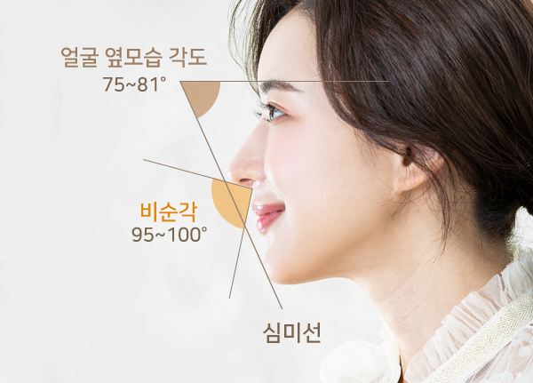

<%=m_client_name_s%> 돌출입교정
입과 잇몸이 돌출된 형태를 개선해 균형 잡힌 옆모습을 만드는 교정입니다.
<%=m_client_en%>
Protrusion Correction
입툭튀 돌출입교정
부드러운 인상을 만들어주는
얼굴을 옆에서 보았을 때 코끝이나 턱 끝에 비해 입이 앞으로 튀어 나온 상태를 말합니다.
치아와 잇몸이 같이 앞으로 튀어나와 있는 경우로,
웃을 때 잇몸이 드러나 미관상 아름답지 않다고 생각할 수 있습니다.
또는 화나있는 듯한 인상을 주기도 하지만 돌출입은 교정만으로도 좋은 인상으로 변화가 가능합니다.
옥니 / 합죽이 걱정 NO
얼굴과의 조화를 고려하여
돌출입 치료 진행
치료계획 수립 시 얼굴과학에 근거하여 입술위치를 평가한 후
앞니의 이상적인 각도와 위치를 설정합니다.
이를 바탕으로 발치할 치아, 치아이동량, 힘의 방향을 결정하고 치료합니다.
그러므로 <%=m_client_name%>의 돌출입 교정은 얼굴과의 조화를 고려하여
옥니 걱정 / 합죽이 걱정 없이 돌출입을 치료할 수 있습니다.

비발치 돌출입
교정 방법
" 돌출입이라고 해서 꼭 수술을 해야 하거나,
발치를 해야 하는 건 아닙니다 "
치아의 돌출이나 턱뼈의 모양을 고려하여
비발치로도 충분히 돌출입을 개선할 수 있습니다
-
1

악궁확장
확장장치를 이용하여 악궁을 좌우로 확장시켜
치열에 공간을 만듭니다. -
2

치아후방이동
돌출된 앞니를 부분적으로 뒤로 밀어
이동시켜 줍니다. -
3

치간삭제
치아의 옆면을 다듬어
공간을 만들어 교정합니다.
나도 돌출입일까?
" 눈에 띄는 돌출입은 굳이 이런
고민을 하지 않아도 되겠지요 "
하지만 스스로 돌출입이라고 생각하시는 분들은 아래 3가지 이상의 항목에 해당이 됩니다.
<%=m_client_name%>와 함께 자가 돌출입 체크를 해보세요!
돌출입 체크 리스트
3가지 이상 해당된다면
교정 상담을 받아 보세요!
- 무의식중에 입이 항상 벌어진다.
- 웃을 때 잇몸의 노출이 많다.
- 코 끝과 턱 끝을 자로 대보면 많이 닿는다.
- 입을 꽉 다물지 않으면 벌어져 있을 때가 많다.
- 입술을 맞닿으려면 힘이 들어간다.
- 의식적으로 입을 다물면 턱 끝에 호두 주름이 잡힌다.
- 인중이 너무 짧거나 길어 보인다.